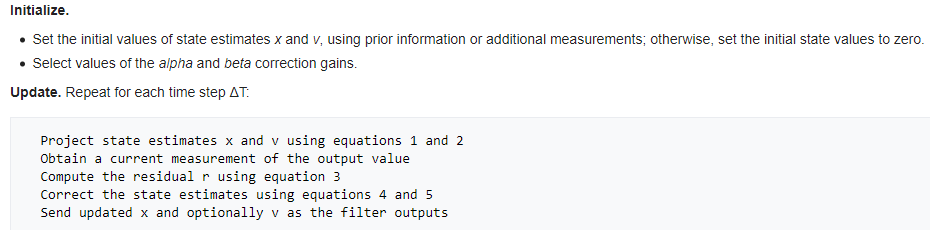
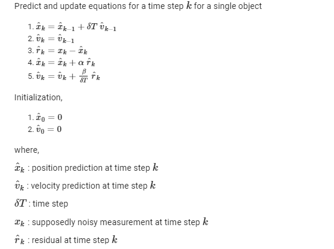

Problem Definition
The current problem involves the implementation of tracking algorithms. Specifically two datasets have been given, the bat dataset and the cell dataset. Multiple objects are present in each frame and have to be tracked. The assumptions we make are that the objects move only slightly between two frames. The anticipated difficulties are implementing a reliable tracking algorithm and obtaining correct segmentation data.
Method and Implementation
Multiple Object Tracking
Alpha-Beta Filtering
For the tracking part, an alpha-beta tracker was implemented. The alpha beta observer is a simplified form of a linear state observer that assumes an object can be described by a model with 2 internal states. This system accounts for both process noise and measurement noise and is a lower order approximation. The two internal states represented by the model are position and velocity. This tracker has a prediction phase where it predicts the position and velocity for this time step using knowledge from the previous time step. In then calculates the residual ( measurement for this time step - prediction) and uses it to update the position and the velocity weighed by the parameters α,β respectively.
Figure 1 : Algorithm summary
For our implementation the equations used were,
Figure 2 : Update equations
The values for α,β itself are hyperparameters. Typically, lower values of α,β reflect more belief on the prediction ( when there is more measurement noise ) and higher values reflect more belief on the measurement (less measurement noise).
All this was the alpha beta tracker for a single object. While extending to multiple objects, the main problem was data association. Also, all of the above parameters had to re-written as matrices and vectors. So all the update operations became vector operations.
- show_frame_wise methods(): ran the tracking. Different other helper functions were created to perform the other tasks.
- create_color_hash(): create the color hash to plot the tracks of the different bats.
- draw_line(): drew the bat tracks on the image.
- update_velocity(): performed the velocity updates.
- update_coords(): performed the position updates
- subtract(): calculate the residual vector
- association(): performed the data association
- distance(): calculated the euclidean distance between two points
- get_x_pred(): predicted the object coordinates of the next time step.
Suboptimal Bipartite Matching Algorithm - Improving Greedy Algorithm
To solve the bipartite matching problem, we initially implemented greedy algorithm to solve it. However, the results were very bad; mostly because it is 'greedy'. As a result, we modified the greedy algorithm to gain better results. I will explain our modifications below:
The traditional bipartite matching problem is - how can we match 2 sets of data together?; in this case, the group of localization points at each frame and the group of objects that are already recognized. Using the greedy algorithm, older objects wiht longer tracking history were matched first. The gating used was a circular gate of 50 px. This was a trade off between recall and precision.
The first main problem with the greedy algorithm was most bats (and cells) stay from the first frame onwards, and therefore, there were many objects that had the longest tracking history possible. As a result, the greedy algorithm was not effective in this bat (and cell) dataset.
The second main problem is that greedy algorithm tries to match the localization points and objects in a 'greedy' manner. This is very not effective in a bipartite matching algorithm because there might be better matches along the way, but it not looked at yet (because it is greedy).
To address the two problems above, we implemented a slightly different version of it. First, every localization point picks the closest (as in predicted position) object. As you can imagine, it's possible for 2 localization points to pick the same object. In that case, we enforce a 1 to 1 mapping by keeping only the pair of localization point and object with closest distance. The rest of the points are now turned into "zombies". Zombies are converted into new objects.
Handle localization errors - Half Dead
Basically, this part tries the fix a problem where the localization points are not very consistent. There might be a frame or two where the bat is there, but the localization point for it is not picked up. This is the case in the original localization dataset provided to us. We aim to fix this problem using a concept we term "Half Dead".
Half Dead are unmatched objects by the end of the association method. They are 'half dead' because we don't want to discard them yet. We want to see if we can match them in the next n frames. n is a tunable variable; currently set to 2.
Segmentation/Localization
Cell Dataset
>>Type Here<<
Experiments
>>Type Here<<
Results
>>Type Here<<
Discussion
Improving Greedy Algorithm
As explained in the "Suboptimal Bipartite Matching Algorithm" section, we found the greedy algorithm to be ineffective for the bat and cell dataset. And as a result, we improved and implemented our own algorithm to solve the bipartite problem. The details are in the "Suboptimal Bipartite Matching Algorithm" section.
Handle localization problems
As explained in the "Handle localization errors" section above, the localization dataset might not be perfect and for a given object, the localization point of that object might be missing in some frames. We take in account of that in our algorithm. More details are explained in that section.
>>Type Here<<
Conclusion
Future work would definitely include using kalman filters and the optimal matching (hungarian) algorithm. MHT could also be tried.
Credits and Bibliography
>>Type Here<<